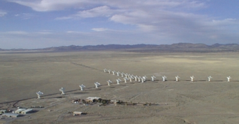

The Very Large Array (VLA) is a radio telescope situated in New Mexico, USA. It has been in operation since 1980. The VLA is a radio interferometer, which works by combining the signals from many antennas, synthesising a much larger telescope.

Credit: Dave Finley, courtesy NRAO and Associated Universities, Inc.
The telescope is comprised of 27 radio antennas, 26 m in diameter, arranged in a “Y”-shape configuration. The antennas are moved every six months, which provides slightly different distances between the antennas. The largest baseline (the distance between antennas) configuration is 36 km, and in the smallest array the maximum baseline separation is 1 km.
The VLA enables astronomers to make high spatial resolution observations of the radio emission from galaxies, quasars, gamma-ray bursts, and many objects within the Milky Way. The correlator can produce high frequency resolution observations of neutral hydrogen (HI) which are pivotal in studies of nearby galaxies.
After 25 years of successful operation an ambitious upgrade began, allowing cooler system temperatures and wider bandwidths to be employed – this is the so-called expanded VLA (EVLA). It is one of the most productive instruments in astronomy.